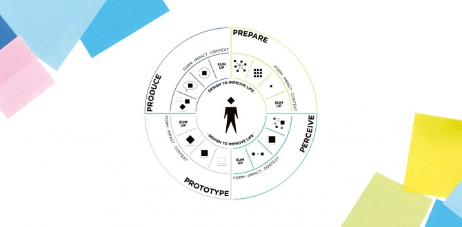
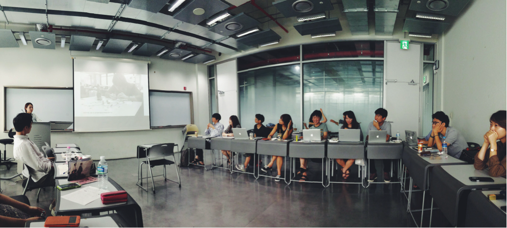
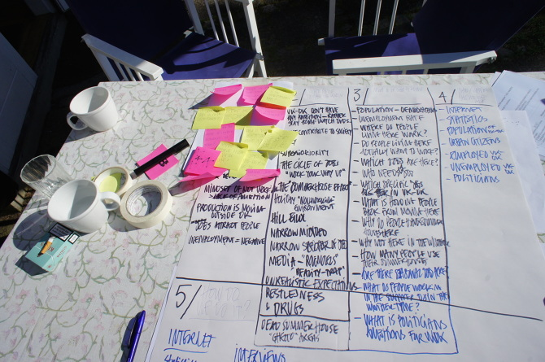

Javascript와 HTML5/CSS3, React를 중심으로 프론트엔드 웹 개발 및 전반적인 웹 환경과 관련해 공부한 내용을 정리하고 공유합니다. 때로 UX, 그래픽, 기본 컴퓨터공학, 웹 기술, 프레임웍 등 흥미를 가지고 있는 내용들이 올라올 예정입니다. 글 내용에 오류가 있으면 메일jennybe0117@gmail.com로 알려주세요.
학교에서 문화인류학을 전공했고 학교 밖에서 디자인 씽킹design thinking 방법론, 웹 프론트엔드 개발을 배웠습니다.
2012년에 덴마크 시민학교인 Krogerup Højskole에서 국제학을 수료하고 사진, 비판적 문화간섭(Cultural Jamming)과정을 이수했습니다.
I majored in cultural anthropology at school, and learned design thinking methodology outside of the school.
In 2012, completed International(Global) Studies at Krogerup Højskole, a Danish citizen school, and completed photography and critical cultural jamming course as well.

현재는 웹 프론트엔드 개발과 UX 연구, 데이터 시각화를 다루기 위해 공부하고 있습니다. 시각적 요소와 그것을 매개로 메시지를 전달하는 데에 관심이 있습니다. 넘치는 정보와 문제들을 이야기로 풀어 더 많은 사람들에게 공유하고 싶습니다. 그래서 데이터 시각화에 흥미를 가지고 있습니다.
인간의 감정과 사회에 대한 이해를 통해 공감능력과 다양한 인터뷰 방법론 등 정성적 방법론을 주로 다뤄왔습니다. 앞으로는 이뿐만 아니라 데이터에 기반한 정량적 조사를 통해 데이터 기반의 작업들을 하고 싶습니다.
I’ve been studying to become a web front-end developer. I am interested in visualizing messages. In other words, using visual element to convey messages through it. I want to share the information and problems that are overflowing nowadays with more people.
I have mainly dealt with qualitative methodologies about human emotion and understanding of society, so I’ve trained empathy ability, in-depth interview skills, and Ethnographic writing. In the future, I would like to do data-based tasks through quantitative research based on data as well.
목표는 데이터 시각화를 할 수 있는 개발자/정보디자이너로 성장하는 것입니다. 웹의 시각적/동적 구현을 통해 좀 더 나은 정보의 큐레이션을 가능하게 함으로써 디지털(기술) 리터러시/정보 접근성 장벽을 동시에 낮추는 데에 기여하고 싶습니다.
보다 장기적인 목표로는 CCS(Critical Code Studies)와 같은 분야에서 연구를 하고 싶습니다. 기술에 대한 문화적/사회과학적 접근 뿐만 아니라, 사회적 메시지 전달을 위해 코드로 무언가 만들어낼 수 있는 양방향적인 사람이 되고자 합니다. 문화인류학, UX, Civic tech, 프론트엔드 개발 등 제가 가지고 있는 다양한 경험들을 종합해 컴퓨터 프로그래밍과 코딩, 디지털 세계에 대한 개인/사회의 이해를 돕는 일들을 하고 싶습니다.
My goal is to grow into a developer who can make information visualization and data visualization. I would like to be a developer who contributes to lowering the digital(tech) literacy / information access barriers at the same time by enabling more efficient information curator through the visual / dynamic implementation of web.
For longer term goals, I would like to study in areas such as Critical Code Studies (CCS). I want to be an interactive person who can create something with code to convey social messages as well as a cultural/social scientific approach to technology for sharing black-boxed knowledge. I would like to do my best to help individuals and society understand computer programming, coding, and the digital world by combining my experience with cultural anthropology, UX, Civic tech, and front end development.
다학제 협업학회 DEMA studio에서 프로젝트를 진행했고, 학회장으로 활동했습니다(2014).

하자 창의허브 코워킹 스페이스 기획 업무(2011), INDEX: Design to Improve Life에서 덴마크 선생님들을 위한 design thinking 교육 워크북 디벨롭(2012), 녹색당 청년 정치인을 위한 정책 공보물 디자인(2014) 등을 했습니다.
스타트업에서 기술을 사용한 시민 참여, 시빅 테크니션(civic technician), 시의성이 높은 국내외 사회/정치 뉴스와 자료들을 발행하는 업무를 맡아 했습니다(2016).

패스트캠퍼스 과정 마지막 프로젝트 ‘dayback’
Vue.js 프레임웍을 이용해 하루를 돌아보고 자신의 감정과 간단한 내용을 기록하는 서비스를 만드는 프로젝트를 백엔드 개발자들과 함께 진행했습니다.
공동 작업으로 합치기 전 개별적으로 구현한 개인 프로젝트
함께 공부하면서 진행한 개인작업 중 각자 하고 싶은 부분을 맡아서 협업/소스통합을 진행했다. 추가적으로 스크롤 기능을 추가했고, transition 효과를 응용해 하루에 하나만 작성할 수 있도록 했다.
새로 시작하는 여성 엔지니어들의 모임입니다.
데이터 시각화 data visualization웹 프론트엔드 개발 web front-end develop디자인 사고법 design thinking시빅 테크 civic-tech